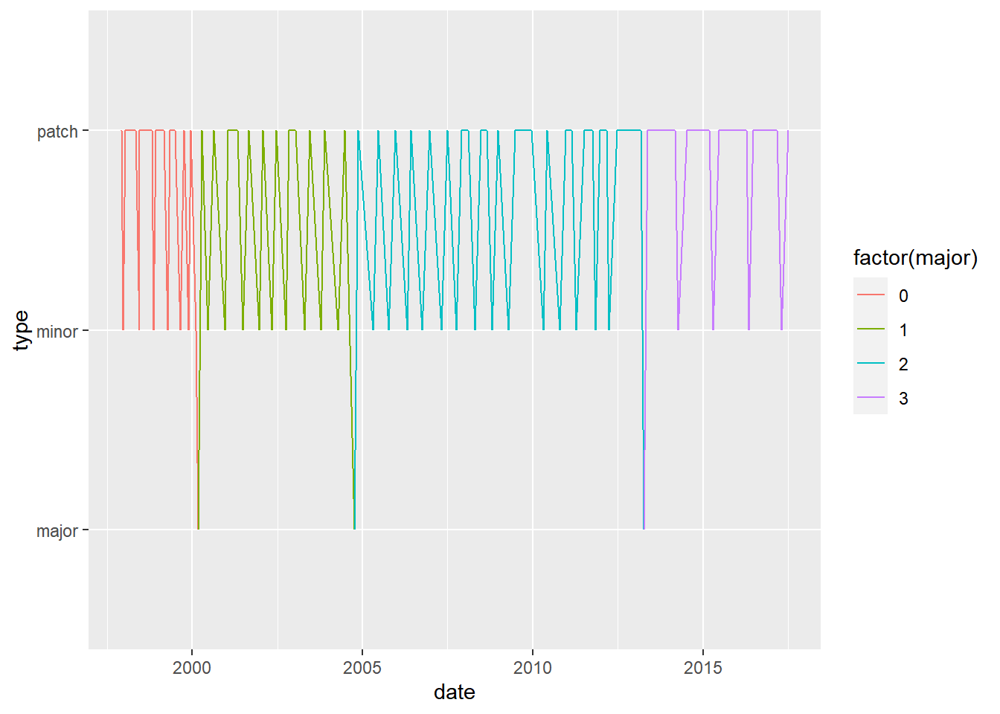
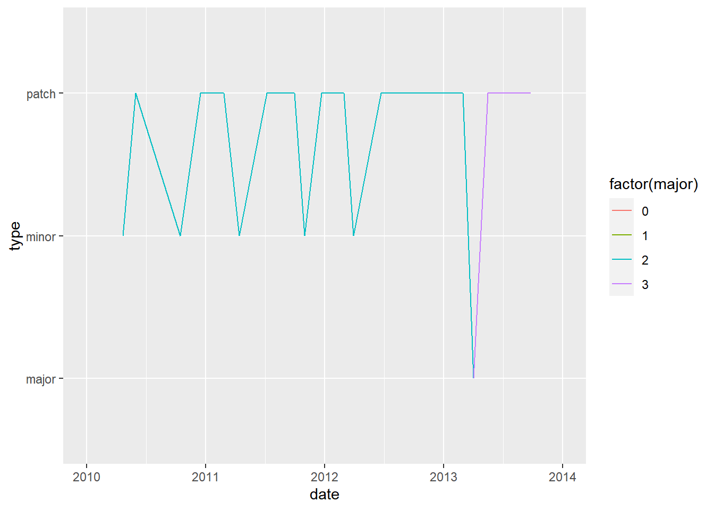
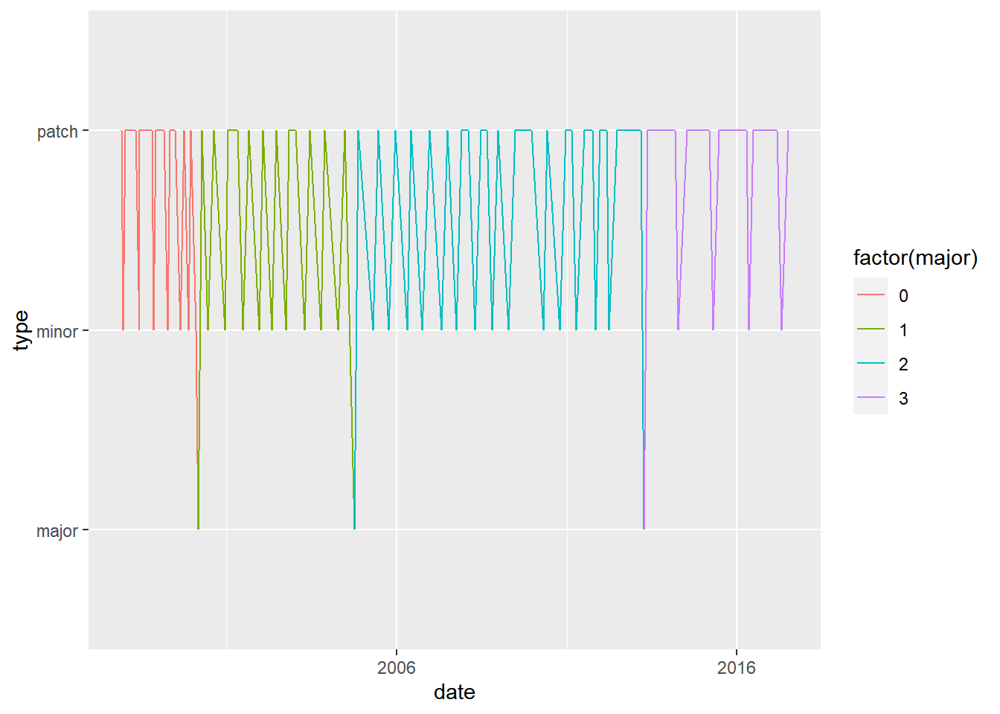
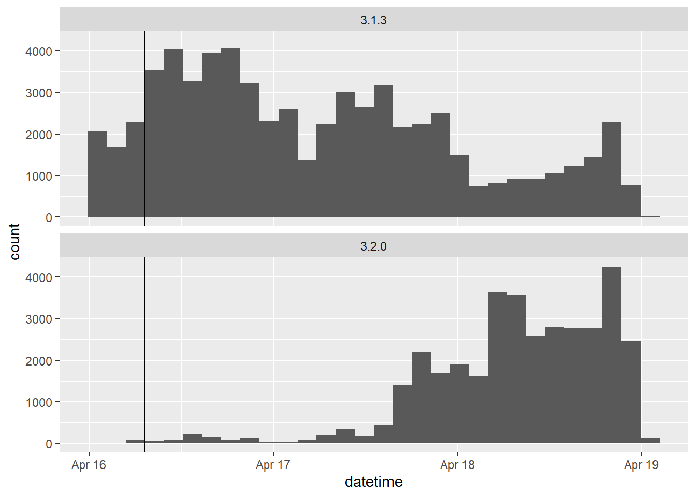
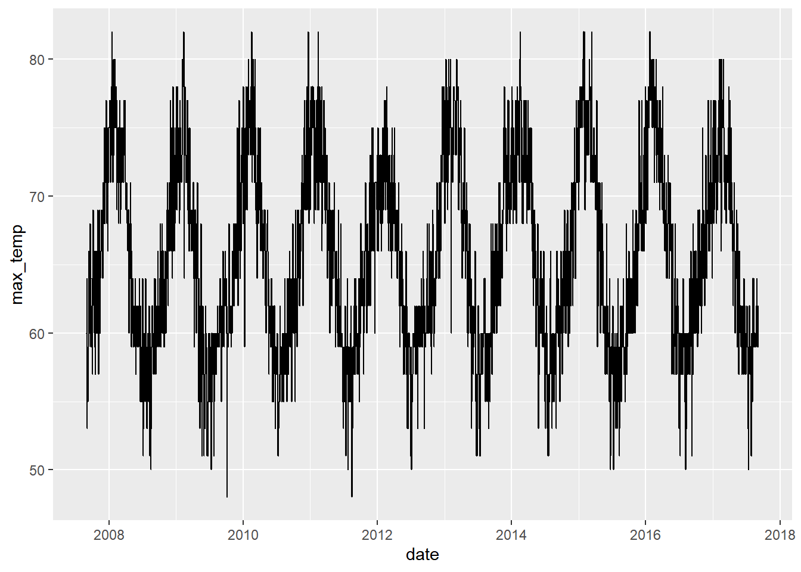
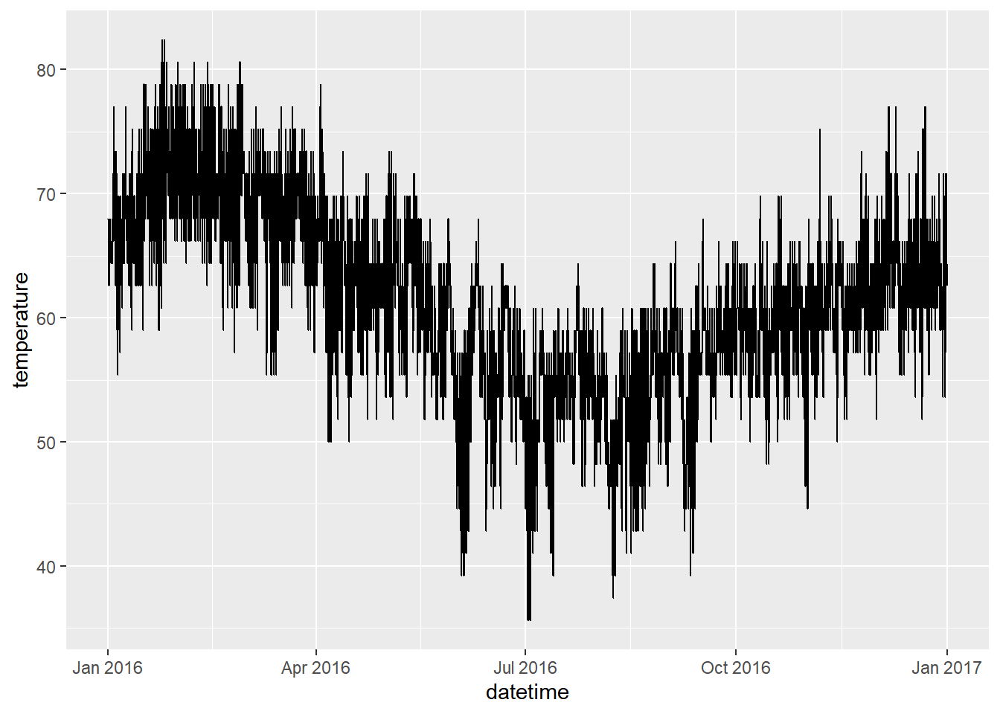
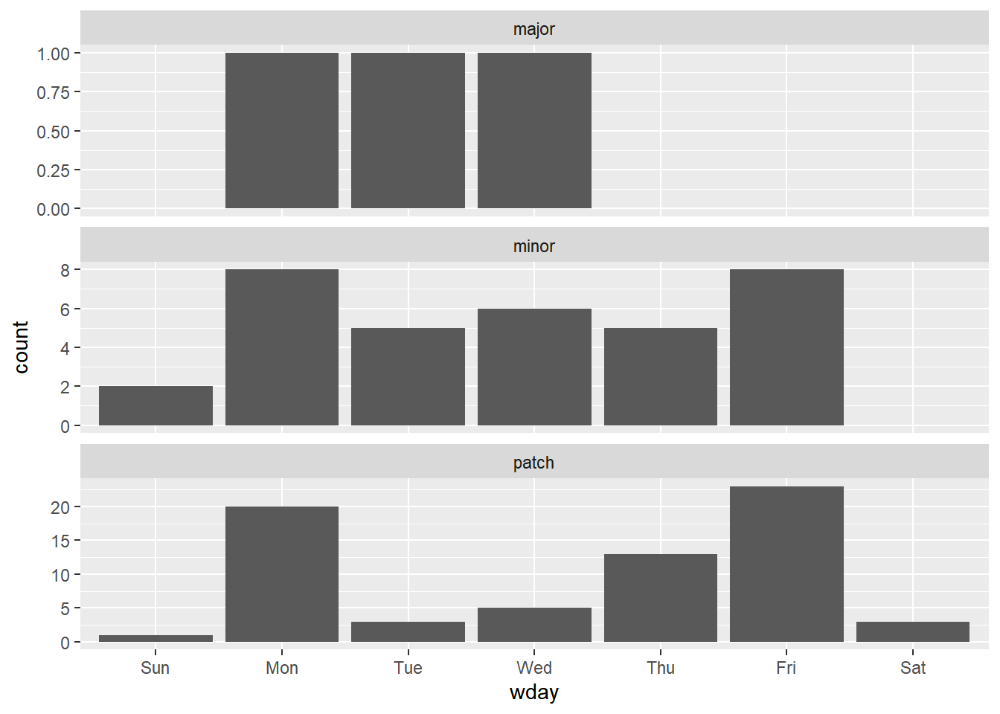
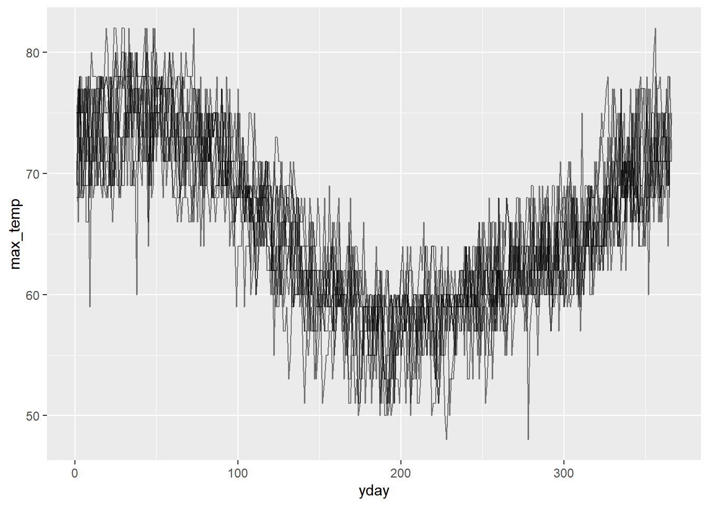
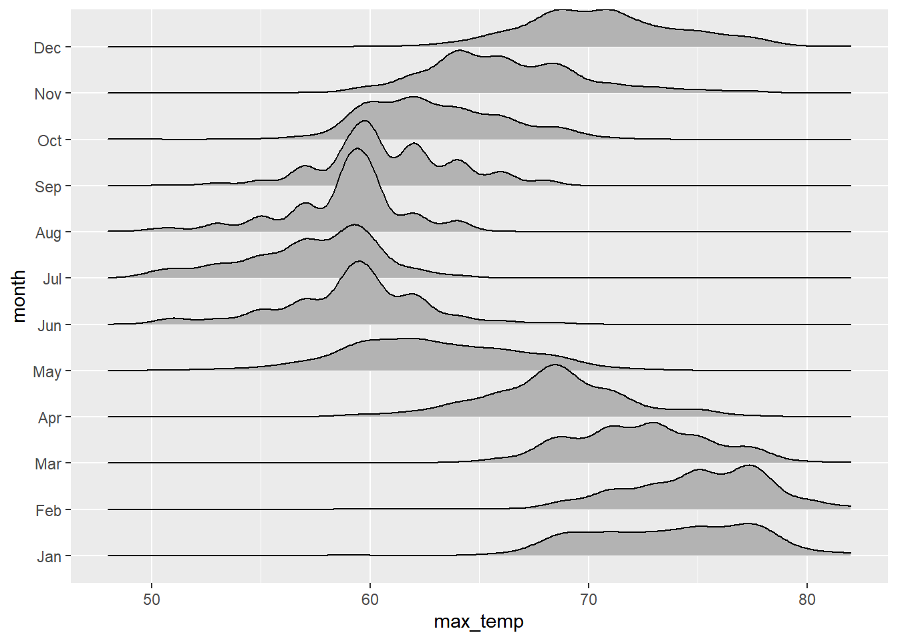
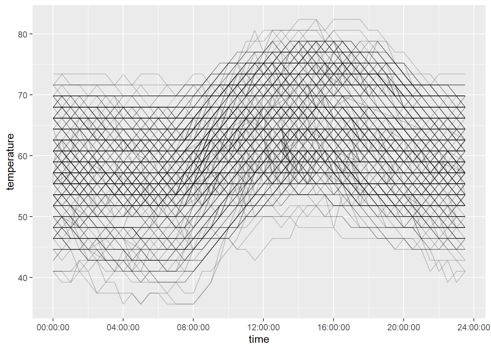

Chapter 11 Working with Dates and Times in R
11.1 Dates and Times in R
11.1.1 Introduction to dates
ISO 8601: YYYY-MM-DD
Values ordered from the largest to smallest unit of time
Each has a ,xed number of digits, must be padded with leading zeros
Either, no separators for computers, or - in dates
1st of January 2011 -> 2011-01-01
11.1.1.1 Specifying dates
# The date R 3.0.0 was released
x <- "2013-04-03"
# Examine structure of x
str(x)## chr "2013-04-03"# Use as.Date() to interpret x as a date
x_date <- as.Date(x)
# Examine structure of x_date
str(x_date)## Date[1:1], format: "2013-04-03"# Store April 10 2014 as a Date
april_10_2014 <- as.Date("2014-04-10")11.1.1.2 Automatic import
anytime() function in the anytime package: automatically parse strings as dates regardless of the format.
# Load the readr package
library(readr)
# Use read_csv() to import rversions.csv
releases <- read_csv("data/rversions.csv")
# Examine the structure of the date column
str(releases$date)## Date[1:105], format: "1997-12-04" "1997-12-21" "1998-01-10" "1998-03-14" "1998-05-02" ...# Load the anytime package
library(anytime)
# Various ways of writing Sep 10 2009
sep_10_2009 <- c("September 10 2009", "2009-09-10", "10 Sep 2009", "09-10-2009")
# Use anytime() to parse sep_10_2009
anytime(sep_10_2009)## [1] "2009-09-10 CST" "2009-09-10 CST" "2009-09-10 CST" "2009-09-10 CST"11.1.2 Why use dates?
Dates act like numbers
Plotting with dates
str(releases)## spc_tbl_ [105 × 7] (S3: spec_tbl_df/tbl_df/tbl/data.frame)
## $ major : num [1:105] 0 0 0 0 0 0 0 0 0 0 ...
## $ minor : num [1:105] 60 61 61 61 61 62 62 62 62 62 ...
## $ patch : num [1:105] NA NA 1 2 3 NA 1 2 3 4 ...
## $ date : Date[1:105], format: "1997-12-04" "1997-12-21" ...
## $ datetime: POSIXct[1:105], format: "1997-12-04 08:47:58" "1997-12-21 13:09:22" ...
## $ time : 'hms' num [1:105] 08:47:58 13:09:22 00:31:55 19:25:55 ...
## ..- attr(*, "units")= chr "secs"
## $ type : chr [1:105] "patch" "minor" "patch" "patch" ...
## - attr(*, "spec")=
## .. cols(
## .. major = col_double(),
## .. minor = col_double(),
## .. patch = col_double(),
## .. date = col_date(format = ""),
## .. datetime = col_datetime(format = ""),
## .. time = col_time(format = ""),
## .. type = col_character()
## .. )
## - attr(*, "problems")=<externalptr>11.1.2.1 Plotting
library(ggplot2)
# Set the x axis to the date column
ggplot(releases, aes(x = date, y = type)) +
geom_line(aes(group = 1, color = factor(major)))
# Limit the axis to between 2010-01-01 and 2014-01-01
ggplot(releases, aes(x = date, y = type)) +
geom_line(aes(group = 1, color = factor(major))) +
xlim(as.Date("2010-01-01"), as.Date("2014-01-01"))## Warning: Removed 87 rows containing missing values
## (`geom_line()`).
# Specify breaks every ten years and labels with "%Y"
ggplot(releases, aes(x = date, y = type)) +
geom_line(aes(group = 1, color = factor(major))) +
scale_x_date(date_breaks = "10 years", date_labels = "%Y")
11.1.2.2 Arithmetic & logical operators
Since Date objects are internally represented as the number of days since 1970-01-01, you can do basic math and comparisons with dates.
You can compare dates with the usual logical operators (<, ==, > etc.), find extremes with min() and max(), and even subtract two dates to find out the time between them.
Sys.date() -> today’s date
library(dplyr)
# Find the largest date
last_release_date <- max(releases$date)
# Filter row for last release
last_release <- releases %>% filter(date == last_release_date)
# Print last_release
last_release## # A tibble: 1 × 7
## major minor patch date datetime time type
## <dbl> <dbl> <dbl> <date> <dttm> <time> <chr>
## 1 3 4 1 2017-06-30 2017-06-30 07:04:11 07:04:11 patch# How long since last release?
Sys.Date() - last_release_date## Time difference of 2391 days11.1.3 What about times?
ISO 8601: HH:MM:SS
Largest unit to smallest
Fixed digits
Hours: 00 -- 24
Minutes: 00 -- 59
Seconds: 00 -- 60 (60 only for leap seconds)
No separator or
:
Datetimes in R
Two objects types:
POSIXlt- list with named componentsPOSIXct- seconds since 1970-01-01 00:00:00
POSIXctwill go in a data frameas.POSIXct()turns a string into aPOSIXctobject
Timezones
as.POSIXct("2013-02-27T18:00:00Z", tz = "UTC")
11.1.3.1 Getting datetimes
as.POSIXct()expects strings to be in the formatYYYY-MM-DD HH:MM:SScheck your timezone with
Sys.timezone()- If you want the time to be interpreted in a different timezone, set the
tzargument ofas.POSIXct()
- If you want the time to be interpreted in a different timezone, set the
# Check timezone
Sys.timezone()## [1] "Asia/Taipei"# Use as.POSIXct to enter the datetime
as.POSIXct("2010-10-01 12:12:00")## [1] "2010-10-01 12:12:00 CST"# Use as.POSIXct again but set the timezone to `"America/Los_Angeles"`
as.POSIXct("2010-10-01 12:12:00", tz = "America/Los_Angeles")## [1] "2010-10-01 12:12:00 PDT"# Examine structure of datetime column
str(releases$datetime)## POSIXct[1:105], format: "1997-12-04 08:47:58" "1997-12-21 13:09:22" "1998-01-10 00:31:55" ...11.1.3.2 Plot
# Import "cran-logs_2015-04-17.csv" with read_csv()
logs <- read_csv("data/cran-logs_2015-04-17.csv")
# Print logs
print(logs)## # A tibble: 100,000 × 3
## datetime r_version country
## <dttm> <chr> <chr>
## 1 2015-04-16 22:40:19 3.1.3 CO
## 2 2015-04-16 09:11:04 3.1.3 GB
## 3 2015-04-16 17:12:37 3.1.3 DE
## 4 2015-04-18 12:34:43 3.2.0 GB
## 5 2015-04-16 04:49:18 3.1.3 PE
## 6 2015-04-16 06:40:44 3.1.3 TW
## 7 2015-04-16 00:21:36 3.1.3 US
## 8 2015-04-16 10:27:23 3.1.3 US
## 9 2015-04-16 01:59:43 3.1.3 SG
## 10 2015-04-18 15:41:32 3.2.0 CA
## # ℹ 99,990 more rows# Store the release time as a POSIXct object
release_time <- as.POSIXct("2015-04-16 07:13:33", tz = "UTC")
# When is the first download of 3.2.0?
logs %>%
filter(datetime > release_time, r_version == "3.2.0") %>%
arrange(datetime)## # A tibble: 35,826 × 3
## datetime r_version country
## <dttm> <chr> <chr>
## 1 2015-04-16 07:20:06 3.2.0 GB
## 2 2015-04-16 07:30:18 3.2.0 ES
## 3 2015-04-16 07:36:04 3.2.0 US
## 4 2015-04-16 07:36:38 3.2.0 IN
## 5 2015-04-16 07:39:17 3.2.0 FI
## 6 2015-04-16 07:39:34 3.2.0 UA
## 7 2015-04-16 07:39:37 3.2.0 DE
## 8 2015-04-16 07:40:13 3.2.0 DE
## 9 2015-04-16 07:40:33 3.2.0 US
## 10 2015-04-16 07:43:29 3.2.0 KR
## # ℹ 35,816 more rows# Examine histograms of downloads by version
ggplot(logs, aes(x = datetime)) +
geom_histogram() +
geom_vline(aes(xintercept = as.numeric(release_time)))+
facet_wrap(~ r_version, ncol = 1)
11.2 Parsing & Manipulating with lubridate
lubridate in tidyverse package
11.2.1 Parsing dates
Parsing dates
ymd(): year, then month, then dayydm(),mdy(),myd(),dmy(),dym(),dmy_hms(),dmy_hm(),dmy_h()…
parse_date_time("date", order = "***")- e.g,
parse_date_time(c("27-02-2013", "2013 Feb 27th"), orders = c("dmy", "ymd"))
- e.g,
Formatting characters

11.2.1.1 Select the right parsing function
library(lubridate)
# Parse x
x <- "2010 September 20th" # 2010-09-20
ymd(x)## [1] "2010-09-20"# Parse y
y <- "02.01.2010" # 2010-01-02
dmy(y)## [1] "2010-01-02"# Parse z
z <- "Sep, 12th 2010 14:00" # 2010-09-12T14:00
mdy_hm(z)## [1] "2010-09-12 14:00:00 UTC"11.2.1.2 Specify an order with parse_date_time
One advantage of parse_date_time() is that you can use more format characters.
For example, you can specify weekday names with A, I for 12 hour time, am/pm indicators with p and many others. You can see a whole list on the help page ?parse_date_time.
# Change to UTC timezone
Sys.setlocale("LC_TIME", "C")## [1] "C"# Specify an order string to parse x
x <- "Monday June 1st 2010 at 4pm"
parse_date_time(x, orders = "AbdY_Ip")## [1] "2010-06-01 16:00:00 UTC"# Specify order to include both "mdy" and "dmy"
two_orders <- c("October 7, 2001", "October 13, 2002", "April 13, 2003",
"17 April 2005", "23 April 2017")
parse_date_time(two_orders, orders = c("mdy", "dmy"))## [1] "2001-10-07 UTC" "2002-10-13 UTC" "2003-04-13 UTC" "2005-04-17 UTC"
## [5] "2017-04-23 UTC"# Specify order to include "dOmY", "OmY" and "Y"
short_dates <- c("11 December 1282", "May 1372", "1253")
parse_date_time(short_dates, orders = c("dOmY", "OmY", "Y"))## [1] "1282-12-11 UTC" "1372-05-01 UTC" "1253-01-01 UTC"When a date component is missing, it’s just set to 1
11.2.2 Manipulating dates
make_datehas arguments year, month and day to allow you to specify a date from its individual components.make_date(year, month, day)Each argument can be vectors
make_datetimeadds hour, min and sec arguments to build a datetime.make_datetime(year, month, day, hour, min, sec)
11.2.2.1 Import daily weather data
library(tidyverse)
# Import CSV with read_csv()
akl_daily_raw <- read_csv("data/akl_weather_daily.csv")
# Print akl_daily_raw
print(akl_daily_raw)## # A tibble: 3,661 × 7
## date max_temp min_temp mean_temp mean_rh events cloud_cover
## <chr> <dbl> <dbl> <dbl> <dbl> <chr> <dbl>
## 1 2007-9-1 60 51 56 75 <NA> 4
## 2 2007-9-2 60 53 56 82 Rain 4
## 3 2007-9-3 57 51 54 78 <NA> 6
## 4 2007-9-4 64 50 57 80 Rain 6
## 5 2007-9-5 53 48 50 90 Rain 7
## 6 2007-9-6 57 42 50 69 <NA> 1
## 7 2007-9-7 59 41 50 77 <NA> 4
## 8 2007-9-8 59 46 52 80 <NA> 5
## 9 2007-9-9 55 50 52 88 Rain 7
## 10 2007-9-10 59 50 54 82 Rain 4
## # ℹ 3,651 more rows# Parse date
akl_daily <- akl_daily_raw %>%
mutate(date = ymd(date))
# Print akl_daily
print(akl_daily)## # A tibble: 3,661 × 7
## date max_temp min_temp mean_temp mean_rh events cloud_cover
## <date> <dbl> <dbl> <dbl> <dbl> <chr> <dbl>
## 1 2007-09-01 60 51 56 75 <NA> 4
## 2 2007-09-02 60 53 56 82 Rain 4
## 3 2007-09-03 57 51 54 78 <NA> 6
## 4 2007-09-04 64 50 57 80 Rain 6
## 5 2007-09-05 53 48 50 90 Rain 7
## 6 2007-09-06 57 42 50 69 <NA> 1
## 7 2007-09-07 59 41 50 77 <NA> 4
## 8 2007-09-08 59 46 52 80 <NA> 5
## 9 2007-09-09 55 50 52 88 Rain 7
## 10 2007-09-10 59 50 54 82 Rain 4
## # ℹ 3,651 more rows# Plot to check work
ggplot(akl_daily, aes(x = date, y = max_temp)) +
geom_line() ## Warning: Removed 1 row containing missing values
## (`geom_line()`).
11.2.2.2 Import hourly weather data
The date information is spread over three columns year, month and mday, so you’ll need to use make_date() to combine them.
time information is in a separate time column.
One way to construct the datetimes is to paste the date and time together and then parse them.
# Import "akl_weather_hourly_2016.csv"
akl_hourly_raw <- read_csv("data/akl_weather_hourly_2016.csv")
# Print akl_hourly_raw
print(akl_hourly_raw)## # A tibble: 17,454 × 10
## year month mday time temperature weather conditions events humidity
## <dbl> <dbl> <dbl> <time> <dbl> <chr> <chr> <chr> <dbl>
## 1 2016 1 1 00:00 68 Clear Clear <NA> 68
## 2 2016 1 1 00:30 68 Clear Clear <NA> 68
## 3 2016 1 1 01:00 68 Clear Clear <NA> 73
## 4 2016 1 1 01:30 68 Clear Clear <NA> 68
## 5 2016 1 1 02:00 68 Clear Clear <NA> 68
## 6 2016 1 1 02:30 68 Clear Clear <NA> 68
## 7 2016 1 1 03:00 68 Clear Clear <NA> 68
## 8 2016 1 1 03:30 68 Cloudy Partly Cloudy <NA> 68
## 9 2016 1 1 04:00 68 Cloudy Scattered Clouds <NA> 68
## 10 2016 1 1 04:30 66.2 Cloudy Partly Cloudy <NA> 73
## # ℹ 17,444 more rows
## # ℹ 1 more variable: date_utc <dttm># Use make_date() to combine year, month and mday
akl_hourly <- akl_hourly_raw %>%
mutate(date = make_date(year = year, month = month, day = mday))
# Parse datetime_string
akl_hourly <- akl_hourly %>%
mutate(
datetime_string = paste(date, time, sep = "T"),
datetime = ymd_hms(datetime_string)
)
# Print date, time and datetime columns of akl_hourly
akl_hourly %>% select(date, time, datetime)## # A tibble: 17,454 × 3
## date time datetime
## <date> <time> <dttm>
## 1 2016-01-01 00:00 2016-01-01 00:00:00
## 2 2016-01-01 00:30 2016-01-01 00:30:00
## 3 2016-01-01 01:00 2016-01-01 01:00:00
## 4 2016-01-01 01:30 2016-01-01 01:30:00
## 5 2016-01-01 02:00 2016-01-01 02:00:00
## 6 2016-01-01 02:30 2016-01-01 02:30:00
## 7 2016-01-01 03:00 2016-01-01 03:00:00
## 8 2016-01-01 03:30 2016-01-01 03:30:00
## 9 2016-01-01 04:00 2016-01-01 04:00:00
## 10 2016-01-01 04:30 2016-01-01 04:30:00
## # ℹ 17,444 more rows# Plot to check work
ggplot(akl_hourly, aes(x = datetime, y = temperature)) +
geom_line()
11.2.3 Extracting parts of a datetime
| Function | Extracts |
|---|---|
year() |
Year with century |
month() |
Month (1-12) |
day() |
Day of month (1-31) |
hour() |
Hour (0-23) |
min() |
Minute (0-59) |
second() |
Second (0-59) |
wday() |
Weekday (1-7) |
yday() |
Day of year a.k.a. Julian day (1-366) |
tz() |
Timezone |
# Example
x <- ymd("2013-02-23")
# output 2013
year(x)
# output 2
month(x)
#output 23
day(x)Setting parts of a datetime
# Example
x <- ymd("2013-02-23")
# output "2013-02-23"
x
# Set new year, output "2017-02-23"
year(x) <- 2017xOther useful functions
| Function | Extracts |
|---|---|
leap_year() |
In leap year ( 閏年, TRUE or FALSE ) |
am() |
In morning ( TRUE or FALSE ) |
pm() |
In afternoon ( TRUE or FALSE ) |
dst() |
During daylight savings ( TRUE or FALSE ) |
quarter() |
Quarter of year (1-4) |
semester() |
Half of year (1-2) |
11.2.3.1 What can you extract
release_time <- releases$datetime
# Examine the head() of release_time
head(release_time)## [1] "1997-12-04 08:47:58 UTC" "1997-12-21 13:09:22 UTC"
## [3] "1998-01-10 00:31:55 UTC" "1998-03-14 19:25:55 UTC"
## [5] "1998-05-02 07:58:17 UTC" "1998-06-14 12:56:20 UTC"# Examine the head() of the months of release_time
head(month(release_time))## [1] 12 12 1 3 5 6# Extract the month of releases
month(release_time) %>% table()## .
## 1 2 3 4 5 6 7 8 9 10 11 12
## 5 6 8 18 5 16 4 7 2 15 6 13# Extract the year of releases
year(release_time) %>% table()## .
## 1997 1998 1999 2000 2001 2002 2003 2004 2005 2006 2007 2008 2009 2010 2011 2012
## 2 10 9 6 6 5 5 4 4 4 4 6 5 4 6 4
## 2013 2014 2015 2016 2017
## 4 4 5 5 3# How often is the hour before 12 (noon)?
mean(hour(release_time) < 12)## [1] 0.752381# How often is the release in am?
# Alternatively use am() to find out how often releases happen in the morning.
mean(am(release_time))## [1] 0.752381R versions have historically been released most in April, June, October and December, 1998 saw 10 releases and about 75% of releases happen in the morning (at least according to UTC).
11.2.3.2 Adding useful labels
Both the month() and wday() (day of the week) functions have two additional arguments:
label: Setlabel = TRUEto have the output labelled with month (or weekday) namesabbr: Setabbr = FALSEfor those names to be written in full rather than abbreviated.
# Use wday() to tabulate release by day of the week
# Do you know if 1 is Sunday or Monday?
lubridate::wday(releases$datetime) %>% table()## .
## 1 2 3 4 5 6 7
## 3 29 9 12 18 31 3# Add label = TRUE to make table more readable
lubridate::wday(releases$datetime, label = TRUE) %>% table()## .
## Sun Mon Tue Wed Thu Fri Sat
## 3 29 9 12 18 31 3# Create column wday to hold labelled week days
releases$wday <- lubridate::wday(releases$datetime, label = TRUE)
# Plot barchart of weekday by type of release
ggplot(releases, aes(wday)) +
geom_bar() +
facet_wrap(~ type, ncol = 1, scale = "free_y")
Looks like not too many releases occur on the weekends, and there is quite a different weekday pattern between minor and patch releases.
11.2.3.3 Extracting for plotting
Extracting components from a datetime is particularly useful when exploring data.
Earlier in the chapter you imported daily data for weather in Auckland, and created a time series plot of ten years of daily maximum temperature. While that plot gives you a good overview of the whole ten years, it’s hard to see the annual pattern.
In this exercise you’ll use components of the dates to help explore the pattern of maximum temperature over the year.
head(akl_daily)## # A tibble: 6 × 7
## date max_temp min_temp mean_temp mean_rh events cloud_cover
## <date> <dbl> <dbl> <dbl> <dbl> <chr> <dbl>
## 1 2007-09-01 60 51 56 75 <NA> 4
## 2 2007-09-02 60 53 56 82 Rain 4
## 3 2007-09-03 57 51 54 78 <NA> 6
## 4 2007-09-04 64 50 57 80 Rain 6
## 5 2007-09-05 53 48 50 90 Rain 7
## 6 2007-09-06 57 42 50 69 <NA> 1The first step is to create some new columns to hold the extracted pieces, then you’ll use them in a couple of plots.
# Add columns for year, yday and month
akl_daily <- akl_daily %>%
mutate(
year = lubridate::year(date),
yday = lubridate::yday(date),
month = lubridate::month(date, label = TRUE))
# Take a look of mutate outcome
akl_daily %>% select(date, year, yday, month)## # A tibble: 3,661 × 4
## date year yday month
## <date> <dbl> <dbl> <ord>
## 1 2007-09-01 2007 244 Sep
## 2 2007-09-02 2007 245 Sep
## 3 2007-09-03 2007 246 Sep
## 4 2007-09-04 2007 247 Sep
## 5 2007-09-05 2007 248 Sep
## 6 2007-09-06 2007 249 Sep
## 7 2007-09-07 2007 250 Sep
## 8 2007-09-08 2007 251 Sep
## 9 2007-09-09 2007 252 Sep
## 10 2007-09-10 2007 253 Sep
## # ℹ 3,651 more rowsEach year is a line on this plot, with the x-axis running from Jan 1 to Dec 31.
# Plot max_temp by yday for all years
ggplot(akl_daily, aes(x = yday, y = max_temp)) +
geom_line(aes(group = year), alpha = 0.5)## Warning: Removed 1 row containing missing values
## (`geom_line()`).
To take an alternate look, create a ridgeline plot(formerly known as a joyplot) with max_temp on the x-axis, month on the y-axis, using geom_density_ridges() from the ggridges package.
library(ggridges)## Warning: package 'ggridges' was built under R version 4.3.2# Examine distribution of max_temp by month
ggplot(akl_daily, aes(x = max_temp, y = month, height = ..density..)) +
geom_density_ridges(stat = "density")## Warning: Removed 10 rows containing non-finite values
## (`stat_density()`).
Looks like Jan, Feb and Mar are great months to visit if you want warm temperatures.
11.2.3.4 Extracting for filter & summarize
Another reason to extract components is to help with filtering observations or creating summaries.
For example, if you are only interested in observations made on weekdays (i.e. not on weekends) you could extract the weekdays then filter out weekends, e.g. wday(date) %in% 2:6.
You’ll use the hourly data to calculate how many days in each month there was any rain during the day.
str(akl_hourly)## tibble [17,454 × 13] (S3: tbl_df/tbl/data.frame)
## $ year : num [1:17454] 2016 2016 2016 2016 2016 ...
## $ month : num [1:17454] 1 1 1 1 1 1 1 1 1 1 ...
## $ mday : num [1:17454] 1 1 1 1 1 1 1 1 1 1 ...
## $ time : 'hms' num [1:17454] 00:00:00 00:30:00 01:00:00 01:30:00 ...
## ..- attr(*, "units")= chr "secs"
## $ temperature : num [1:17454] 68 68 68 68 68 68 68 68 68 66.2 ...
## $ weather : chr [1:17454] "Clear" "Clear" "Clear" "Clear" ...
## $ conditions : chr [1:17454] "Clear" "Clear" "Clear" "Clear" ...
## $ events : chr [1:17454] NA NA NA NA ...
## $ humidity : num [1:17454] 68 68 73 68 68 68 68 68 68 73 ...
## $ date_utc : POSIXct[1:17454], format: "2015-12-31 11:00:00" "2015-12-31 11:30:00" ...
## $ date : Date[1:17454], format: "2016-01-01" "2016-01-01" ...
## $ datetime_string: chr [1:17454] "2016-01-01T00:00:00" "2016-01-01T00:30:00" "2016-01-01T01:00:00" "2016-01-01T01:30:00" ...
## $ datetime : POSIXct[1:17454], format: "2016-01-01 00:00:00" "2016-01-01 00:30:00" ...# Create new columns hour, month and rainy
akl_hourly <- akl_hourly %>%
mutate(
hour = lubridate::hour(datetime),
month = lubridate::month(datetime, label = TRUE),
rainy = weather == "Precipitation"
)
akl_hourly %>% select(datetime, date, hour, month, rainy)## # A tibble: 17,454 × 5
## datetime date hour month rainy
## <dttm> <date> <int> <ord> <lgl>
## 1 2016-01-01 00:00:00 2016-01-01 0 Jan FALSE
## 2 2016-01-01 00:30:00 2016-01-01 0 Jan FALSE
## 3 2016-01-01 01:00:00 2016-01-01 1 Jan FALSE
## 4 2016-01-01 01:30:00 2016-01-01 1 Jan FALSE
## 5 2016-01-01 02:00:00 2016-01-01 2 Jan FALSE
## 6 2016-01-01 02:30:00 2016-01-01 2 Jan FALSE
## 7 2016-01-01 03:00:00 2016-01-01 3 Jan FALSE
## 8 2016-01-01 03:30:00 2016-01-01 3 Jan FALSE
## 9 2016-01-01 04:00:00 2016-01-01 4 Jan FALSE
## 10 2016-01-01 04:30:00 2016-01-01 4 Jan FALSE
## # ℹ 17,444 more rowsFilter to just daytime observations.
# Filter for hours between 8am and 10pm (inclusive)
akl_day <- akl_hourly %>%
filter(hour >= 8, hour <= 22)Group the observations first by month, then by date, and summarise by using any() on the rainy column. This results in one value per day.
# Summarise for each date if there is any rain
rainy_days <- akl_day %>%
group_by(month, date) %>%
summarise(
any_rain = any(rainy)
)## `summarise()` has grouped output by 'month'.
## You can override using the `.groups`
## argument.rainy_days## # A tibble: 366 × 3
## # Groups: month [12]
## month date any_rain
## <ord> <date> <lgl>
## 1 Jan 2016-01-01 TRUE
## 2 Jan 2016-01-02 TRUE
## 3 Jan 2016-01-03 TRUE
## 4 Jan 2016-01-04 FALSE
## 5 Jan 2016-01-05 FALSE
## 6 Jan 2016-01-06 FALSE
## 7 Jan 2016-01-07 TRUE
## 8 Jan 2016-01-08 TRUE
## 9 Jan 2016-01-09 FALSE
## 10 Jan 2016-01-10 FALSE
## # ℹ 356 more rowsSummarise again by summing any_rain. This results in one value per month.
# Summarise for each month, the number of days with rain
rainy_days %>%
summarise(
days_rainy = sum(any_rain)
)## # A tibble: 12 × 2
## month days_rainy
## <ord> <int>
## 1 Jan 15
## 2 Feb 13
## 3 Mar 12
## 4 Apr 15
## 5 May 21
## 6 Jun 19
## 7 Jul 22
## 8 Aug 16
## 9 Sep 25
## 10 Oct 20
## 11 Nov 19
## 12 Dec 11At least in 2016, it looks like you’ll still need to pack a raincoat if you visit in Jan, Feb or March.
days_in_month get the number of days in the month of a date-time.(該月份有幾天)
11.2.4 Rounding datetimes
Rounding in lubridate
round_date()- round to nearest (四捨五入)ceiling_date()- round up (無條件進位)floor_date()- round down (無條件捨去)Possible values of
unit:"second","minute","hour","day","week","month","bimonth","quarter","halfyear", or"year".Or multiples, e.g
"2 years","5 minutes"
11.2.4.1 Practice rounding
That last technique of subtracting a rounded datetime from an unrounded one is a really useful trick to remember.
r_3_4_1 <- ymd_hms("2016-05-03 07:13:28 UTC")
# Round down to day
floor_date(r_3_4_1, unit = "day")## [1] "2016-05-03 UTC"# Round to nearest 5 minutes
round_date(r_3_4_1, unit = "5 minutes")## [1] "2016-05-03 07:15:00 UTC"# Round up to week
ceiling_date(r_3_4_1, unit = "week")## [1] "2016-05-08 UTC"# Subtract r_3_4_1 rounded down to day
r_3_4_1 - floor_date(r_3_4_1, unit = "day")## Time difference of 7.224444 hours11.2.4.2 Rounding with the weather data
The advantage of rounding over extracting is that it maintains the context of the unit.
You’ll explore how many observations per hour there really are in the hourly Auckland weather data.
# Create day_hour, datetime rounded down to hour
akl_hourly <- akl_hourly %>%
mutate(
day_hour = floor_date(datetime, unit = "hour")
)
akl_hourly %>% select(datetime, day_hour)## # A tibble: 17,454 × 2
## datetime day_hour
## <dttm> <dttm>
## 1 2016-01-01 00:00:00 2016-01-01 00:00:00
## 2 2016-01-01 00:30:00 2016-01-01 00:00:00
## 3 2016-01-01 01:00:00 2016-01-01 01:00:00
## 4 2016-01-01 01:30:00 2016-01-01 01:00:00
## 5 2016-01-01 02:00:00 2016-01-01 02:00:00
## 6 2016-01-01 02:30:00 2016-01-01 02:00:00
## 7 2016-01-01 03:00:00 2016-01-01 03:00:00
## 8 2016-01-01 03:30:00 2016-01-01 03:00:00
## 9 2016-01-01 04:00:00 2016-01-01 04:00:00
## 10 2016-01-01 04:30:00 2016-01-01 04:00:00
## # ℹ 17,444 more rowsCount how many observations there are in each hour. What looks like the most common value?
# Count observations per hour
akl_hourly %>%
count(day_hour) ## # A tibble: 8,770 × 2
## day_hour n
## <dttm> <int>
## 1 2016-01-01 00:00:00 2
## 2 2016-01-01 01:00:00 2
## 3 2016-01-01 02:00:00 2
## 4 2016-01-01 03:00:00 2
## 5 2016-01-01 04:00:00 2
## 6 2016-01-01 05:00:00 2
## 7 2016-01-01 06:00:00 2
## 8 2016-01-01 07:00:00 2
## 9 2016-01-01 08:00:00 2
## 10 2016-01-01 09:00:00 2
## # ℹ 8,760 more rowsFilter for observations where n is not equal to 2.
# Find day_hours with n != 2
akl_hourly %>%
count(day_hour) %>%
filter(n != 2) %>%
arrange(desc(n))## # A tibble: 92 × 2
## day_hour n
## <dttm> <int>
## 1 2016-04-03 02:00:00 4
## 2 2016-09-25 00:00:00 4
## 3 2016-06-26 09:00:00 1
## 4 2016-09-01 23:00:00 1
## 5 2016-09-02 01:00:00 1
## 6 2016-09-04 11:00:00 1
## 7 2016-09-04 16:00:00 1
## 8 2016-09-04 17:00:00 1
## 9 2016-09-05 00:00:00 1
## 10 2016-09-05 15:00:00 1
## # ℹ 82 more rows92 hours that don’t have two measurements. Interestingly there are four measurements on 2016-04-03 and 2016-09-25, they happen to be the days Daylight Saving starts and ends.
11.3 Arithmetic with Dates and Times
11.3.1 Taking differences of datetimes
Subtraction of datetimes
difftime(time1, time2)is the same as
time1 - time2takes an argument
unitswhich specifies the units for the difference.units="secs","mins","hours","days", or"weeks"
lubridatefunctionstoday()andnow(): return the current date and time in your system’s timezone.
today()
# [1] "2023-11-10"
now()
# [1] "2023-11-10 10:53:08 CST"# The date of landing and moment of step
date_landing <- mdy("July 20, 1969")
moment_step <- mdy_hms("July 20, 1969, 02:56:15", tz = "UTC")
# How many days since the first man on the moon?
difftime(today(), date_landing, units = "days")## Time difference of 19903 days# How many seconds since the first man on the moon?
difftime(now(), moment_step, units = "secs")## Time difference of 1719641884 secsHow many seconds are in a day?
There are 24 hours in a day, 60 minutes in an hour, and 60 seconds in a minute, so there should be 24*60*60 = 86400 seconds, right? — Not always!🙄
# Three dates
mar_11 <- ymd_hms("2017-03-11 12:00:00",
tz = "America/Los_Angeles")
mar_12 <- ymd_hms("2017-03-12 12:00:00",
tz = "America/Los_Angeles")
mar_13 <- ymd_hms("2017-03-13 12:00:00",
tz = "America/Los_Angeles")
# Difference between mar_13 and mar_12 in seconds
# This should match your intuition.
difftime(mar_13, mar_12, units = "secs")## Time difference of 86400 secs# Difference between mar_12 and mar_11 in seconds
# Surprised?
difftime(mar_12, mar_11, units = "secs")## Time difference of 82800 secsWhy would a day only have 82800 seconds? At 2am on Mar 12th 2017, Daylight Savings started in the Pacific timezone. That means a whole hour of seconds gets skipped between noon on the 11th and noon on the 12th.
11.3.2 Time spans
Time spans in lubridate
Duration
represent an exact number of seconds
use case: only care about physical time (seconds elapsed)
datetime + duration of one day = datetime + 86400 seconds
Period
represent human units
use case: interested in human interpretaions of time
datetime + period of one day = same time on the next date
Interval
represent a starting and ending point
use case: when you have a start and end, and figure out how long a span is in human units
Functions to create time spans

11.3.2.1 Adding or subtracting a time span
Duration vs Period
# Add a period of one week to mon_2pm
mon_2pm <- dmy_hm("27 Aug 2018 14:00")
mon_2pm + weeks(1)## [1] "2018-09-03 14:00:00 UTC"# Add a duration of 81 hours to tue_9am
tue_9am <- dmy_hm("28 Aug 2018 9:00")
tue_9am + dhours(81)## [1] "2018-08-31 18:00:00 UTC"# Subtract a period of five years from today()
today() - years(5)## [1] "2019-01-16"# Subtract a duration of five years from today()
today() - dyears(5)## [1] "2019-01-15 18:00:00 UTC"Why did subtracting a duration of five years from today, give a different answer to subtracting a period of five years?
Periods know about leap years, and since five years ago includes at least one leap year, the period of five years is longer than the duration of 365*5 days.
11.3.2.2 Arithmetic with timespans
You can add and subtract timespans to create different length timespans, and even multiply them by numbers.
For example, to create a duration of three days and three hours: ddays(3) + dhours(3), 3*ddays(1) + 3*dhours(1) or 3*(ddays(1) + dhours(1))
There was an eclipse over North America on 2017-08-21 at 18:26:40. It’s possible to predict the next eclipse with similar geometry by calculating the time and date one Saros in the future.
One Saros = 223 Synodic Months
One Synodic Month = 29d 12h 44m 03s
# Time of North American Eclipse 2017
eclipse_2017 <- ymd_hms("2017-08-21 18:26:40")
# Duration of 29 days, 12 hours, 44 mins and 3 secs
synodic <- ddays(29) + dhours(12) + dminutes(44) + dseconds(3)
# 223 synodic months
saros <- 223 * synodic
# Add saros to eclipse_2017
eclipse_2017 + saros## [1] "2035-09-02 02:09:49 UTC"11.3.2.3 Generate sequences of datetimes
By combining addition and multiplication with sequences you can generate sequences of datetimes.
1:10 * days(1)## [1] "1d 0H 0M 0S" "2d 0H 0M 0S" "3d 0H 0M 0S" "4d 0H 0M 0S" "5d 0H 0M 0S"
## [6] "6d 0H 0M 0S" "7d 0H 0M 0S" "8d 0H 0M 0S" "9d 0H 0M 0S" "10d 0H 0M 0S"Then by adding this sequence to a specific datetime, you can construct a sequence of datetimes from 1 day up to 10 days into the future.
today() + 1:10 * days(1)## [1] "2024-01-17" "2024-01-18" "2024-01-19" "2024-01-20" "2024-01-21"
## [6] "2024-01-22" "2024-01-23" "2024-01-24" "2024-01-25" "2024-01-26"You had a meeting this morning at 8am and you’d like to have that meeting at the same time and day every two weeks for a year. Generate the meeting times.
# Add a period of 8 hours to today
today_8am <- today() + hours(8); today_8am## [1] "2024-01-16 08:00:00 UTC"# Sequence of two weeks from 1 to 26
every_two_weeks <- 1:26 * weeks(2); every_two_weeks## [1] "14d 0H 0M 0S" "28d 0H 0M 0S" "42d 0H 0M 0S" "56d 0H 0M 0S"
## [5] "70d 0H 0M 0S" "84d 0H 0M 0S" "98d 0H 0M 0S" "112d 0H 0M 0S"
## [9] "126d 0H 0M 0S" "140d 0H 0M 0S" "154d 0H 0M 0S" "168d 0H 0M 0S"
## [13] "182d 0H 0M 0S" "196d 0H 0M 0S" "210d 0H 0M 0S" "224d 0H 0M 0S"
## [17] "238d 0H 0M 0S" "252d 0H 0M 0S" "266d 0H 0M 0S" "280d 0H 0M 0S"
## [21] "294d 0H 0M 0S" "308d 0H 0M 0S" "322d 0H 0M 0S" "336d 0H 0M 0S"
## [25] "350d 0H 0M 0S" "364d 0H 0M 0S"# Create datetime for every two weeks for a year
today_8am + every_two_weeks## [1] "2024-01-30 08:00:00 UTC" "2024-02-13 08:00:00 UTC"
## [3] "2024-02-27 08:00:00 UTC" "2024-03-12 08:00:00 UTC"
## [5] "2024-03-26 08:00:00 UTC" "2024-04-09 08:00:00 UTC"
## [7] "2024-04-23 08:00:00 UTC" "2024-05-07 08:00:00 UTC"
## [9] "2024-05-21 08:00:00 UTC" "2024-06-04 08:00:00 UTC"
## [11] "2024-06-18 08:00:00 UTC" "2024-07-02 08:00:00 UTC"
## [13] "2024-07-16 08:00:00 UTC" "2024-07-30 08:00:00 UTC"
## [15] "2024-08-13 08:00:00 UTC" "2024-08-27 08:00:00 UTC"
## [17] "2024-09-10 08:00:00 UTC" "2024-09-24 08:00:00 UTC"
## [19] "2024-10-08 08:00:00 UTC" "2024-10-22 08:00:00 UTC"
## [21] "2024-11-05 08:00:00 UTC" "2024-11-19 08:00:00 UTC"
## [23] "2024-12-03 08:00:00 UTC" "2024-12-17 08:00:00 UTC"
## [25] "2024-12-31 08:00:00 UTC" "2025-01-14 08:00:00 UTC"11.3.2.4 Tricky thing about months
In general lubridate returns the same day of the month in the next month, but since the 31st of February, April, June, September, November don’t exist, lubridate returns NAs.
jan_31 <- as.Date("2023-01-31")
# A sequence of 1 to 12 periods of 1 month
# output: "1m 0d 0H 0M 0S", "2m 0d 0H 0M 0S"..."12m 0d 0H 0M 0S"
month_seq <- 1:12 * months(1)
# Add 1 to 12 months to jan_31
jan_31 + month_seq## [1] NA "2023-03-31" NA "2023-05-31" NA
## [6] "2023-07-31" "2023-08-31" NA "2023-10-31" NA
## [11] "2023-12-31" "2024-01-31"Alternative addition and subtraction operators: %m+% & %m-%
Rather than returning an NA for a non-existent date, they roll back to the last existing date.
# Replace + with %m+%
jan_31 %m+% month_seq## [1] "2023-02-28" "2023-03-31" "2023-04-30" "2023-05-31" "2023-06-30"
## [6] "2023-07-31" "2023-08-31" "2023-09-30" "2023-10-31" "2023-11-30"
## [11] "2023-12-31" "2024-01-31"# Replace + with %m-%
jan_31 %m-% month_seq## [1] "2022-12-31" "2022-11-30" "2022-10-31" "2022-09-30" "2022-08-31"
## [6] "2022-07-31" "2022-06-30" "2022-05-31" "2022-04-30" "2022-03-31"
## [11] "2022-02-28" "2022-01-31"Use add_with_rollback(x, months(), roll_to_first = TRUE) to rollback to the first day of the month instead of the last day of the previous month.
add_with_rollback(jan_31, months(1), roll_to_first = TRUE)## [1] "2023-03-01"11.3.3 Intervals
Rather than representing an amount of time like a period or duration, interval have a specific start and end datetime.
Creating intervals
datetime1 %--% datetime2interval(datetime1, datetime2)
Operating on an interval
int_start(): extract the start of the interval.int_end(): extract the end of the interval.int_length(): finds the length of the interval in seconds.as.period()as.duration()
Comparing intervals
date
%within%interval : returnTRUEif the datetime is inside the interval, vice versa.int_overlaps(int_1, int_2): returnTRUEif there are any times that are inside both intervals.
11.3.3.1 Examining intervals
Practice by exploring the reigns of kings and queens of Britain (and its historical dominions).
library(readxl)
# Load dataset
monarchs <- read_excel("data/monarchs.xlsx")
str(monarchs)## tibble [131 × 4] (S3: tbl_df/tbl/data.frame)
## $ name : chr [1:131] "Elizabeth II" "Victoria" "George V" "George III" ...
## $ from : chr [1:131] "1952-02-06 00:00:00" "1837-06-20 00:00:00" "1910-05-06 00:00:00" "1801-01-01 00:00:00" ...
## $ to : chr [1:131] "2022-07-04 00:00:00" "1901-01-22 00:00:00" "1936-01-20 00:00:00" "1820-01-29 00:00:00" ...
## $ dominion: chr [1:131] "United Ki" "United Ki" "United Ki" "United Ki" ...# Convert data type
monarchs <- monarchs %>%
mutate(from = as.POSIXct(from, format = "%Y-%m-%d %H:%M:%S"),
to = as.POSIXct(to, format = "%Y-%m-%d %H:%M:%S"))
monarchs## # A tibble: 131 × 4
## name from to dominion
## <chr> <dttm> <dttm> <chr>
## 1 Elizabeth II 1952-02-06 00:00:00 2022-07-04 00:00:00 United Ki
## 2 Victoria 1837-06-20 00:00:00 1901-01-22 00:00:00 United Ki
## 3 George V 1910-05-06 00:00:00 1936-01-20 00:00:00 United Ki
## 4 George III 1801-01-01 00:00:00 1820-01-29 00:00:00 United Ki
## 5 George VI 1936-12-11 00:00:00 1952-02-06 00:00:00 United Ki
## 6 George IV 1820-01-29 00:00:00 1830-06-26 00:00:00 United Ki
## 7 Edward VII 1901-01-22 00:00:00 1910-05-06 00:00:00 United Ki
## 8 William IV 1830-06-26 00:00:00 1837-06-20 00:00:00 United Ki
## 9 Edward VIII 1936-01-20 00:00:00 1936-12-11 00:00:00 United Ki
## 10 George III(also United ~ 1760-10-25 00:00:00 1801-01-01 00:00:00 Great Bri
## # ℹ 121 more rows# Create an interval for reign
monarchs <- monarchs %>%
mutate(reign = from %--% to)
# Find the length of reign, and arrange
monarchs %>%
mutate(length = int_length(reign)) %>%
arrange(desc(length)) %>%
select(name, length, dominion)## # A tibble: 131 × 3
## name length dominion
## <chr> <dbl> <chr>
## 1 Elizabeth II 2221862400 United Ki
## 2 Victoria 2006726760 United Ki
## 3 James VI 1820102400 Scotland
## 4 Gruffudd ap Cynan 1767139200 Gwynedd
## 5 Edward III 1590624000 England
## 6 William I 1545868800 Scotland
## 7 Llywelyn the Great 1428796800 Gwynedd
## 8 Elizabeth I 1399507200 England
## 9 Constantine II 1356912000 Scotland
## 10 David II 1316304000 Scotland
## # ℹ 121 more rows11.3.3.2 Comparing intervals and datetimes
A common task with intervals is to ask if a certain time is inside the interval or whether it overlaps with another interval.
The operator %within% tests if the datetime (or interval) on the left hand side is within the interval of the right hand side.
int_overlaps() performs a similar test, but will return true if two intervals overlap at all.
halleys is a data set describing appearances of Halley’s comet.
Practice to find out which monarchs saw Halley’s comet around 1066.
halleys <- read_excel("data/halleys.xlsx")
str(halleys)## tibble [27 × 6] (S3: tbl_df/tbl/data.frame)
## $ designation : chr [1:27] "1P/66 B1, 66" "1P/141 F1, 141" "1P/218 H1, 218" "1P/295 J1, 295" ...
## $ year : num [1:27] 66 141 218 295 374 451 530 607 684 760 ...
## $ perihelion_date: chr [1:27] "1966-01-26" "141-03-25" "218-04-06" "295-04-07" ...
## $ start_date : chr [1:27] "1966-01-26" "141-03-22" "218-04-06" "295-04-07" ...
## $ end_date : chr [1:27] "1966-01-26" "141-03-25" "218-05-17" "295-04-20" ...
## $ distance : chr [1:27] "NA" "NA" "NA" "NA" ...perihelion_date is the date the Comet is closest to the Sun.
start_date and end_date are the range of dates the comet is visible from Earth.
# convert data type
halleys <- halleys %>%
mutate(perihelion_date = as.Date(perihelion_date, format = "%Y-%m-%d"),
start_date = as.Date(start_date, format = "%Y-%m-%d"),
end_date = as.Date(end_date, format = "%Y-%m-%d"))
halleys## # A tibble: 27 × 6
## designation year perihelion_date start_date end_date distance
## <chr> <dbl> <date> <date> <date> <chr>
## 1 1P/66 B1, 66 66 1966-01-26 1966-01-26 1966-01-26 NA
## 2 1P/141 F1, 141 141 0141-03-25 0141-03-22 0141-03-25 NA
## 3 1P/218 H1, 218 218 0218-04-06 0218-04-06 0218-05-17 NA
## 4 1P/295 J1, 295 295 0295-04-07 0295-04-07 0295-04-20 NA
## 5 1P/374 E1, 374 374 0374-02-13 0374-02-13 0374-02-16 0.09 AU
## 6 1P/451 L1, 451 451 0451-07-03 0451-06-28 0451-07-03 NA
## 7 1P/530 Q1, 530 530 0530-11-15 0530-09-27 0530-11-15 NA
## 8 1P/607 H1, 607 607 0607-03-26 0607-03-15 0607-03-26 0.09 AU
## 9 1P/684 R1, 684 684 0684-11-26 0684-10-02 0684-11-26 NA
## 10 1P/760 K1, 760 760 0760-06-10 0760-05-20 0760-06-10 NA
## # ℹ 17 more rowsWork with one appearance.
# New column for interval from start to end date
halleys <- halleys %>%
mutate(visible = start_date %--% end_date)
# The visitation of 1066
halleys_1066 <- halleys[14, ]; halleys_1066## # A tibble: 1 × 7
## designation year perihelion_date start_date end_date distance
## <chr> <dbl> <date> <date> <date> <chr>
## 1 1P/1066 G1, 1066 1066 1066-03-25 1066-01-01 1066-03-25 0.10 AU
## # ℹ 1 more variable: visible <Interval># Monarchs in power on perihelion date
monarchs %>%
filter(halleys_1066$perihelion_date %within% reign) %>%
select(name, from, to, dominion)## # A tibble: 2 × 4
## name from to dominion
## <chr> <dttm> <dttm> <chr>
## 1 Harold II 1066-01-05 00:00:00 1066-10-14 00:00:00 England
## 2 Malcolm III 1058-03-17 00:00:00 1093-11-13 00:00:00 Scotland# Monarchs whose reign overlaps visible time
monarchs %>%
filter(int_overlaps(reign, halleys_1066$visible)) %>%
select(name, from, to, dominion)## # A tibble: 3 × 4
## name from to dominion
## <chr> <dttm> <dttm> <chr>
## 1 Edward the Confessor 1042-06-08 00:00:00 1066-01-05 00:00:00 England
## 2 Harold II 1066-01-05 00:00:00 1066-10-14 00:00:00 England
## 3 Malcolm III 1058-03-17 00:00:00 1093-11-13 00:00:00 ScotlandLooks like the Kings of England Edward the Confessor and Harold II would have been able to see the comet.
11.3.3.3 Converting to durations and periods
Intervals are the most specific way to represent a span of time since they retain information about the exact start and end moments.
They can be converted to periods (as.period()) and durations (as.duration) exactly:
Calculate both the exact number of seconds elapsed between the start and end date, as well as the perceived change in clock time.
Try to get better representations of the length of the monarchs reigns.
# New columns for duration and period
monarchs <- monarchs %>%
mutate(
duration = as.duration(reign),
period = as.period(reign))
# Examine results
monarchs %>%
select(name, duration, period)## # A tibble: 131 × 3
## name duration period
## <chr> <Duration> <Period>
## 1 Elizabeth II 2221862400s (~70.41 years) 70y 4m 28d 0H 0M 0S
## 2 Victoria 2006726760s (~63.59 years) 63y 7m 2d 0H 0M 0S
## 3 George V 811296000s (~25.71 years) 25y 8m 14d 0H 0M 0S
## 4 George III 601948800s (~19.07 years) 19y 0m 28d 0H 0M 0S
## 5 George VI 478224000s (~15.15 years) 15y 1m 26d 0H 0M 0S
## 6 George IV 328406400s (~10.41 years) 10y 4m 28d 0H 0M 0S
## 7 Edward VII 292982400s (~9.28 years) 9y 3m 14d 0H 0M 0S
## 8 William IV 220406400s (~6.98 years) 6y 11m 25d 0H 0M 0S
## 9 Edward VIII 28166400s (~46.57 weeks) 10m 21d 0H 0M 0S
## 10 George III(also United ~ 1268092800s (~40.18 years) 40y 2m 7d 0H 0M 0S
## # ℹ 121 more rows11.4 Problems in practice
11.4.1 Time zones
IANA Timezones
OlsonNames()## [1] "Africa/Abidjan" "Africa/Accra"
## [3] "Africa/Addis_Ababa" "Africa/Algiers"
## [5] "Africa/Asmara" "Africa/Asmera"
## [7] "Africa/Bamako" "Africa/Bangui"
## [9] "Africa/Banjul" "Africa/Bissau"
## [11] "Africa/Blantyre" "Africa/Brazzaville"
## [13] "Africa/Bujumbura" "Africa/Cairo"
## [15] "Africa/Casablanca" "Africa/Ceuta"
## [17] "Africa/Conakry" "Africa/Dakar"
## [19] "Africa/Dar_es_Salaam" "Africa/Djibouti"
## [21] "Africa/Douala" "Africa/El_Aaiun"
## [23] "Africa/Freetown" "Africa/Gaborone"
## [25] "Africa/Harare" "Africa/Johannesburg"
## [27] "Africa/Juba" "Africa/Kampala"
## [29] "Africa/Khartoum" "Africa/Kigali"
## [31] "Africa/Kinshasa" "Africa/Lagos"
## [33] "Africa/Libreville" "Africa/Lome"
## [35] "Africa/Luanda" "Africa/Lubumbashi"
## [37] "Africa/Lusaka" "Africa/Malabo"
## [39] "Africa/Maputo" "Africa/Maseru"
## [41] "Africa/Mbabane" "Africa/Mogadishu"
## [43] "Africa/Monrovia" "Africa/Nairobi"
## [45] "Africa/Ndjamena" "Africa/Niamey"
## [47] "Africa/Nouakchott" "Africa/Ouagadougou"
## [49] "Africa/Porto-Novo" "Africa/Sao_Tome"
## [51] "Africa/Timbuktu" "Africa/Tripoli"
## [53] "Africa/Tunis" "Africa/Windhoek"
## [55] "America/Adak" "America/Anchorage"
## [57] "America/Anguilla" "America/Antigua"
## [59] "America/Araguaina" "America/Argentina/Buenos_Aires"
## [61] "America/Argentina/Catamarca" "America/Argentina/ComodRivadavia"
## [63] "America/Argentina/Cordoba" "America/Argentina/Jujuy"
## [65] "America/Argentina/La_Rioja" "America/Argentina/Mendoza"
## [67] "America/Argentina/Rio_Gallegos" "America/Argentina/Salta"
## [69] "America/Argentina/San_Juan" "America/Argentina/San_Luis"
## [71] "America/Argentina/Tucuman" "America/Argentina/Ushuaia"
## [73] "America/Aruba" "America/Asuncion"
## [75] "America/Atikokan" "America/Atka"
## [77] "America/Bahia" "America/Bahia_Banderas"
## [79] "America/Barbados" "America/Belem"
## [81] "America/Belize" "America/Blanc-Sablon"
## [83] "America/Boa_Vista" "America/Bogota"
## [85] "America/Boise" "America/Buenos_Aires"
## [87] "America/Cambridge_Bay" "America/Campo_Grande"
## [89] "America/Cancun" "America/Caracas"
## [91] "America/Catamarca" "America/Cayenne"
## [93] "America/Cayman" "America/Chicago"
## [95] "America/Chihuahua" "America/Ciudad_Juarez"
## [97] "America/Coral_Harbour" "America/Cordoba"
## [99] "America/Costa_Rica" "America/Creston"
## [101] "America/Cuiaba" "America/Curacao"
## [103] "America/Danmarkshavn" "America/Dawson"
## [105] "America/Dawson_Creek" "America/Denver"
## [107] "America/Detroit" "America/Dominica"
## [109] "America/Edmonton" "America/Eirunepe"
## [111] "America/El_Salvador" "America/Ensenada"
## [113] "America/Fort_Nelson" "America/Fort_Wayne"
## [115] "America/Fortaleza" "America/Glace_Bay"
## [117] "America/Godthab" "America/Goose_Bay"
## [119] "America/Grand_Turk" "America/Grenada"
## [121] "America/Guadeloupe" "America/Guatemala"
## [123] "America/Guayaquil" "America/Guyana"
## [125] "America/Halifax" "America/Havana"
## [127] "America/Hermosillo" "America/Indiana/Indianapolis"
## [129] "America/Indiana/Knox" "America/Indiana/Marengo"
## [131] "America/Indiana/Petersburg" "America/Indiana/Tell_City"
## [133] "America/Indiana/Vevay" "America/Indiana/Vincennes"
## [135] "America/Indiana/Winamac" "America/Indianapolis"
## [137] "America/Inuvik" "America/Iqaluit"
## [139] "America/Jamaica" "America/Jujuy"
## [141] "America/Juneau" "America/Kentucky/Louisville"
## [143] "America/Kentucky/Monticello" "America/Knox_IN"
## [145] "America/Kralendijk" "America/La_Paz"
## [147] "America/Lima" "America/Los_Angeles"
## [149] "America/Louisville" "America/Lower_Princes"
## [151] "America/Maceio" "America/Managua"
## [153] "America/Manaus" "America/Marigot"
## [155] "America/Martinique" "America/Matamoros"
## [157] "America/Mazatlan" "America/Mendoza"
## [159] "America/Menominee" "America/Merida"
## [161] "America/Metlakatla" "America/Mexico_City"
## [163] "America/Miquelon" "America/Moncton"
## [165] "America/Monterrey" "America/Montevideo"
## [167] "America/Montreal" "America/Montserrat"
## [169] "America/Nassau" "America/New_York"
## [171] "America/Nipigon" "America/Nome"
## [173] "America/Noronha" "America/North_Dakota/Beulah"
## [175] "America/North_Dakota/Center" "America/North_Dakota/New_Salem"
## [177] "America/Nuuk" "America/Ojinaga"
## [179] "America/Panama" "America/Pangnirtung"
## [181] "America/Paramaribo" "America/Phoenix"
## [183] "America/Port-au-Prince" "America/Port_of_Spain"
## [185] "America/Porto_Acre" "America/Porto_Velho"
## [187] "America/Puerto_Rico" "America/Punta_Arenas"
## [189] "America/Rainy_River" "America/Rankin_Inlet"
## [191] "America/Recife" "America/Regina"
## [193] "America/Resolute" "America/Rio_Branco"
## [195] "America/Rosario" "America/Santa_Isabel"
## [197] "America/Santarem" "America/Santiago"
## [199] "America/Santo_Domingo" "America/Sao_Paulo"
## [201] "America/Scoresbysund" "America/Shiprock"
## [203] "America/Sitka" "America/St_Barthelemy"
## [205] "America/St_Johns" "America/St_Kitts"
## [207] "America/St_Lucia" "America/St_Thomas"
## [209] "America/St_Vincent" "America/Swift_Current"
## [211] "America/Tegucigalpa" "America/Thule"
## [213] "America/Thunder_Bay" "America/Tijuana"
## [215] "America/Toronto" "America/Tortola"
## [217] "America/Vancouver" "America/Virgin"
## [219] "America/Whitehorse" "America/Winnipeg"
## [221] "America/Yakutat" "America/Yellowknife"
## [223] "Antarctica/Casey" "Antarctica/Davis"
## [225] "Antarctica/DumontDUrville" "Antarctica/Macquarie"
## [227] "Antarctica/Mawson" "Antarctica/McMurdo"
## [229] "Antarctica/Palmer" "Antarctica/Rothera"
## [231] "Antarctica/South_Pole" "Antarctica/Syowa"
## [233] "Antarctica/Troll" "Antarctica/Vostok"
## [235] "Arctic/Longyearbyen" "Asia/Aden"
## [237] "Asia/Almaty" "Asia/Amman"
## [239] "Asia/Anadyr" "Asia/Aqtau"
## [241] "Asia/Aqtobe" "Asia/Ashgabat"
## [243] "Asia/Ashkhabad" "Asia/Atyrau"
## [245] "Asia/Baghdad" "Asia/Bahrain"
## [247] "Asia/Baku" "Asia/Bangkok"
## [249] "Asia/Barnaul" "Asia/Beirut"
## [251] "Asia/Bishkek" "Asia/Brunei"
## [253] "Asia/Calcutta" "Asia/Chita"
## [255] "Asia/Choibalsan" "Asia/Chongqing"
## [257] "Asia/Chungking" "Asia/Colombo"
## [259] "Asia/Dacca" "Asia/Damascus"
## [261] "Asia/Dhaka" "Asia/Dili"
## [263] "Asia/Dubai" "Asia/Dushanbe"
## [265] "Asia/Famagusta" "Asia/Gaza"
## [267] "Asia/Harbin" "Asia/Hebron"
## [269] "Asia/Ho_Chi_Minh" "Asia/Hong_Kong"
## [271] "Asia/Hovd" "Asia/Irkutsk"
## [273] "Asia/Istanbul" "Asia/Jakarta"
## [275] "Asia/Jayapura" "Asia/Jerusalem"
## [277] "Asia/Kabul" "Asia/Kamchatka"
## [279] "Asia/Karachi" "Asia/Kashgar"
## [281] "Asia/Kathmandu" "Asia/Katmandu"
## [283] "Asia/Khandyga" "Asia/Kolkata"
## [285] "Asia/Krasnoyarsk" "Asia/Kuala_Lumpur"
## [287] "Asia/Kuching" "Asia/Kuwait"
## [289] "Asia/Macao" "Asia/Macau"
## [291] "Asia/Magadan" "Asia/Makassar"
## [293] "Asia/Manila" "Asia/Muscat"
## [295] "Asia/Nicosia" "Asia/Novokuznetsk"
## [297] "Asia/Novosibirsk" "Asia/Omsk"
## [299] "Asia/Oral" "Asia/Phnom_Penh"
## [301] "Asia/Pontianak" "Asia/Pyongyang"
## [303] "Asia/Qatar" "Asia/Qostanay"
## [305] "Asia/Qyzylorda" "Asia/Rangoon"
## [307] "Asia/Riyadh" "Asia/Saigon"
## [309] "Asia/Sakhalin" "Asia/Samarkand"
## [311] "Asia/Seoul" "Asia/Shanghai"
## [313] "Asia/Singapore" "Asia/Srednekolymsk"
## [315] "Asia/Taipei" "Asia/Tashkent"
## [317] "Asia/Tbilisi" "Asia/Tehran"
## [319] "Asia/Tel_Aviv" "Asia/Thimbu"
## [321] "Asia/Thimphu" "Asia/Tokyo"
## [323] "Asia/Tomsk" "Asia/Ujung_Pandang"
## [325] "Asia/Ulaanbaatar" "Asia/Ulan_Bator"
## [327] "Asia/Urumqi" "Asia/Ust-Nera"
## [329] "Asia/Vientiane" "Asia/Vladivostok"
## [331] "Asia/Yakutsk" "Asia/Yangon"
## [333] "Asia/Yekaterinburg" "Asia/Yerevan"
## [335] "Atlantic/Azores" "Atlantic/Bermuda"
## [337] "Atlantic/Canary" "Atlantic/Cape_Verde"
## [339] "Atlantic/Faeroe" "Atlantic/Faroe"
## [341] "Atlantic/Jan_Mayen" "Atlantic/Madeira"
## [343] "Atlantic/Reykjavik" "Atlantic/South_Georgia"
## [345] "Atlantic/St_Helena" "Atlantic/Stanley"
## [347] "Australia/ACT" "Australia/Adelaide"
## [349] "Australia/Brisbane" "Australia/Broken_Hill"
## [351] "Australia/Canberra" "Australia/Currie"
## [353] "Australia/Darwin" "Australia/Eucla"
## [355] "Australia/Hobart" "Australia/LHI"
## [357] "Australia/Lindeman" "Australia/Lord_Howe"
## [359] "Australia/Melbourne" "Australia/North"
## [361] "Australia/NSW" "Australia/Perth"
## [363] "Australia/Queensland" "Australia/South"
## [365] "Australia/Sydney" "Australia/Tasmania"
## [367] "Australia/Victoria" "Australia/West"
## [369] "Australia/Yancowinna" "Brazil/Acre"
## [371] "Brazil/DeNoronha" "Brazil/East"
## [373] "Brazil/West" "Canada/Atlantic"
## [375] "Canada/Central" "Canada/Eastern"
## [377] "Canada/Mountain" "Canada/Newfoundland"
## [379] "Canada/Pacific" "Canada/Saskatchewan"
## [381] "Canada/Yukon" "CET"
## [383] "Chile/Continental" "Chile/EasterIsland"
## [385] "CST6CDT" "Cuba"
## [387] "EET" "Egypt"
## [389] "Eire" "EST"
## [391] "EST5EDT" "Etc/GMT"
## [393] "Etc/GMT-0" "Etc/GMT-1"
## [395] "Etc/GMT-10" "Etc/GMT-11"
## [397] "Etc/GMT-12" "Etc/GMT-13"
## [399] "Etc/GMT-14" "Etc/GMT-2"
## [401] "Etc/GMT-3" "Etc/GMT-4"
## [403] "Etc/GMT-5" "Etc/GMT-6"
## [405] "Etc/GMT-7" "Etc/GMT-8"
## [407] "Etc/GMT-9" "Etc/GMT+0"
## [409] "Etc/GMT+1" "Etc/GMT+10"
## [411] "Etc/GMT+11" "Etc/GMT+12"
## [413] "Etc/GMT+2" "Etc/GMT+3"
## [415] "Etc/GMT+4" "Etc/GMT+5"
## [417] "Etc/GMT+6" "Etc/GMT+7"
## [419] "Etc/GMT+8" "Etc/GMT+9"
## [421] "Etc/GMT0" "Etc/Greenwich"
## [423] "Etc/UCT" "Etc/Universal"
## [425] "Etc/UTC" "Etc/Zulu"
## [427] "Europe/Amsterdam" "Europe/Andorra"
## [429] "Europe/Astrakhan" "Europe/Athens"
## [431] "Europe/Belfast" "Europe/Belgrade"
## [433] "Europe/Berlin" "Europe/Bratislava"
## [435] "Europe/Brussels" "Europe/Bucharest"
## [437] "Europe/Budapest" "Europe/Busingen"
## [439] "Europe/Chisinau" "Europe/Copenhagen"
## [441] "Europe/Dublin" "Europe/Gibraltar"
## [443] "Europe/Guernsey" "Europe/Helsinki"
## [445] "Europe/Isle_of_Man" "Europe/Istanbul"
## [447] "Europe/Jersey" "Europe/Kaliningrad"
## [449] "Europe/Kiev" "Europe/Kirov"
## [451] "Europe/Kyiv" "Europe/Lisbon"
## [453] "Europe/Ljubljana" "Europe/London"
## [455] "Europe/Luxembourg" "Europe/Madrid"
## [457] "Europe/Malta" "Europe/Mariehamn"
## [459] "Europe/Minsk" "Europe/Monaco"
## [461] "Europe/Moscow" "Europe/Nicosia"
## [463] "Europe/Oslo" "Europe/Paris"
## [465] "Europe/Podgorica" "Europe/Prague"
## [467] "Europe/Riga" "Europe/Rome"
## [469] "Europe/Samara" "Europe/San_Marino"
## [471] "Europe/Sarajevo" "Europe/Saratov"
## [473] "Europe/Simferopol" "Europe/Skopje"
## [475] "Europe/Sofia" "Europe/Stockholm"
## [477] "Europe/Tallinn" "Europe/Tirane"
## [479] "Europe/Tiraspol" "Europe/Ulyanovsk"
## [481] "Europe/Uzhgorod" "Europe/Vaduz"
## [483] "Europe/Vatican" "Europe/Vienna"
## [485] "Europe/Vilnius" "Europe/Volgograd"
## [487] "Europe/Warsaw" "Europe/Zagreb"
## [489] "Europe/Zaporozhye" "Europe/Zurich"
## [491] "GB" "GB-Eire"
## [493] "GMT" "GMT-0"
## [495] "GMT+0" "GMT0"
## [497] "Greenwich" "Hongkong"
## [499] "HST" "Iceland"
## [501] "Indian/Antananarivo" "Indian/Chagos"
## [503] "Indian/Christmas" "Indian/Cocos"
## [505] "Indian/Comoro" "Indian/Kerguelen"
## [507] "Indian/Mahe" "Indian/Maldives"
## [509] "Indian/Mauritius" "Indian/Mayotte"
## [511] "Indian/Reunion" "Iran"
## [513] "Israel" "Jamaica"
## [515] "Japan" "Kwajalein"
## [517] "Libya" "MET"
## [519] "Mexico/BajaNorte" "Mexico/BajaSur"
## [521] "Mexico/General" "MST"
## [523] "MST7MDT" "Navajo"
## [525] "NZ" "NZ-CHAT"
## [527] "Pacific/Apia" "Pacific/Auckland"
## [529] "Pacific/Bougainville" "Pacific/Chatham"
## [531] "Pacific/Chuuk" "Pacific/Easter"
## [533] "Pacific/Efate" "Pacific/Enderbury"
## [535] "Pacific/Fakaofo" "Pacific/Fiji"
## [537] "Pacific/Funafuti" "Pacific/Galapagos"
## [539] "Pacific/Gambier" "Pacific/Guadalcanal"
## [541] "Pacific/Guam" "Pacific/Honolulu"
## [543] "Pacific/Johnston" "Pacific/Kanton"
## [545] "Pacific/Kiritimati" "Pacific/Kosrae"
## [547] "Pacific/Kwajalein" "Pacific/Majuro"
## [549] "Pacific/Marquesas" "Pacific/Midway"
## [551] "Pacific/Nauru" "Pacific/Niue"
## [553] "Pacific/Norfolk" "Pacific/Noumea"
## [555] "Pacific/Pago_Pago" "Pacific/Palau"
## [557] "Pacific/Pitcairn" "Pacific/Pohnpei"
## [559] "Pacific/Ponape" "Pacific/Port_Moresby"
## [561] "Pacific/Rarotonga" "Pacific/Saipan"
## [563] "Pacific/Samoa" "Pacific/Tahiti"
## [565] "Pacific/Tarawa" "Pacific/Tongatapu"
## [567] "Pacific/Truk" "Pacific/Wake"
## [569] "Pacific/Wallis" "Pacific/Yap"
## [571] "Poland" "Portugal"
## [573] "PRC" "PST8PDT"
## [575] "ROC" "ROK"
## [577] "Singapore" "Turkey"
## [579] "UCT" "Universal"
## [581] "US/Alaska" "US/Aleutian"
## [583] "US/Arizona" "US/Central"
## [585] "US/East-Indiana" "US/Eastern"
## [587] "US/Hawaii" "US/Indiana-Starke"
## [589] "US/Michigan" "US/Mountain"
## [591] "US/Pacific" "US/Samoa"
## [593] "UTC" "W-SU"
## [595] "WET" "Zulu"
## attr(,"Version")
## [1] "2023c"Setting and extracting timezone
setting: set
tz = "timezone_name"argumentextracting: function
tz()
Manipulating timezones
force_tz(): change the timezone without changing the clock timewith_tz()- view the same instant in a different timezone
11.4.1.1 Setting the timezone
If you import a datetime and it has the wrong timezone, you can set it with force_tz(date, tzone = "tz").
To watch New Zealand in the Women’s World Cup Soccer games in 2015, but the times listed on the FIFA website were all in times local to the venues. In this exercise you’ll help to set the timezones.
# Game2: CAN vs NZL in Edmonton
game2 <- mdy_hm("June 11 2015 19:00")
# Game3: CHN vs NZL in Winnipeg
game3 <- mdy_hm("June 15 2015 18:30")Game 2 was played in Edmonton.
# Set the timezone to "America/Edmonton"
game2_local <- force_tz(game2, tzone = "America/Edmonton")
game2_local## [1] "2015-06-11 19:00:00 MDT"Game 3 was played in Winnipeg.
# Set the timezone to "America/Winnipeg"
game3_local <- force_tz(game3, tzone = "America/Winnipeg")
game3_local## [1] "2015-06-15 18:30:00 CDT"Find out how long the team had to rest between the two games.
# How long does the team have to rest?
as.period(interval(game2_local, game3_local))## [1] "3d 22H 30M 0S"Edmonton and Winnipeg are in different timezones, so even though the start times of the games only look 30 minutes apart, they are in fact 1 hour and 30 minutes apart, and the team only has 3 days, 22 hours and 30 minutes to prepare.
11.4.1.2 Viewing in a timezone
with_tz(date, tzone = "tz") isn’t changing the underlying moment of time.
For example, the difference between now() displayed in the “America/Los_Angeles” timezone and “Pacific/Auckland” timezone is 0. (同一時間，只是在不同時區)
Now, figure out when to tune into the games from the previous exercise.
Most fans will tune in from New Zealand. Usewith_tz() to display game2_local in New Zealand time. New Zealand is in the "Pacific/Auckland" timezone.
# What time is game2_local in NZ?
with_tz(game2_local, tzone = "Pacific/Auckland")## [1] "2015-06-12 13:00:00 NZST"In Corvallis, Corvallis is in the “America/Los_Angeles” timezone.
# What time is game2_local in Corvallis, Oregon?
with_tz(game2_local, tzone = "America/Los_Angeles")## [1] "2015-06-11 18:00:00 PDT"# What time is game3_local in NZ?
with_tz(game3_local, tzone = "Pacific/Auckland")## [1] "2015-06-16 11:30:00 NZST"11.4.1.3 Timezones in the weather data
glimpse(akl_hourly)## Rows: 17,454
## Columns: 16
## $ year <dbl> 2016, 2016, 2016, 2016, 2016, 2016, 2016, 2016, 2016, …
## $ month <ord> Jan, Jan, Jan, Jan, Jan, Jan, Jan, Jan, Jan, Jan, Jan,…
## $ mday <dbl> 1, 1, 1, 1, 1, 1, 1, 1, 1, 1, 1, 1, 1, 1, 1, 1, 1, 1, …
## $ time <time> 00:00:00, 00:30:00, 01:00:00, 01:30:00, 02:00:00, 02:…
## $ temperature <dbl> 68.0, 68.0, 68.0, 68.0, 68.0, 68.0, 68.0, 68.0, 68.0, …
## $ weather <chr> "Clear", "Clear", "Clear", "Clear", "Clear", "Clear", …
## $ conditions <chr> "Clear", "Clear", "Clear", "Clear", "Clear", "Clear", …
## $ events <chr> NA, NA, NA, NA, NA, NA, NA, NA, NA, NA, NA, NA, NA, NA…
## $ humidity <dbl> 68, 68, 73, 68, 68, 68, 68, 68, 68, 73, 73, 73, 68, 73…
## $ date_utc <dttm> 2015-12-31 11:00:00, 2015-12-31 11:30:00, 2015-12-31 …
## $ date <date> 2016-01-01, 2016-01-01, 2016-01-01, 2016-01-01, 2016-…
## $ datetime_string <chr> "2016-01-01T00:00:00", "2016-01-01T00:30:00", "2016-01…
## $ datetime <dttm> 2016-01-01 00:00:00, 2016-01-01 00:30:00, 2016-01-01 …
## $ hour <int> 0, 0, 1, 1, 2, 2, 3, 3, 4, 4, 5, 5, 6, 6, 7, 7, 8, 8, …
## $ rainy <lgl> FALSE, FALSE, FALSE, FALSE, FALSE, FALSE, FALSE, FALSE…
## $ day_hour <dttm> 2016-01-01 00:00:00, 2016-01-01 00:00:00, 2016-01-01 …The datetime column you created represented local time in Auckland, NZ.
Suspect date_utc column represents the observation time in UTC (the name seems a big clue). But does it really?
What timezone are datetime and date_utc currently in?
# Examine datetime columns
head(akl_hourly$datetime)## [1] "2016-01-01 00:00:00 UTC" "2016-01-01 00:30:00 UTC"
## [3] "2016-01-01 01:00:00 UTC" "2016-01-01 01:30:00 UTC"
## [5] "2016-01-01 02:00:00 UTC" "2016-01-01 02:30:00 UTC"# Examine date_utc columns
head(akl_hourly$date_utc)## [1] "2015-12-31 11:00:00 UTC" "2015-12-31 11:30:00 UTC"
## [3] "2015-12-31 12:00:00 UTC" "2015-12-31 12:30:00 UTC"
## [5] "2015-12-31 13:00:00 UTC" "2015-12-31 13:30:00 UTC"Fix datetime to have the timezone for "Pacific/Auckland".
# Force datetime to Pacific/Auckland
akl_hourly <- akl_hourly %>%
mutate(datetime = force_tz(datetime, tzone = "Pacific/Auckland"))
# Reexamine datetime
head(akl_hourly$datetime)## [1] "2016-01-01 00:00:00 NZDT" "2016-01-01 00:30:00 NZDT"
## [3] "2016-01-01 01:00:00 NZDT" "2016-01-01 01:30:00 NZDT"
## [5] "2016-01-01 02:00:00 NZDT" "2016-01-01 02:30:00 NZDT"Now tabulate up the difference between the datetime and date_utc. It should be zero if our hypothesis was correct.
# Are datetime and date_utc the same moments
table(akl_hourly$datetime - akl_hourly$date_utc)##
## -82800 0 3600
## 2 17450 2Looks like for 17,450 rows datetime and date_utc describe the same moment.
But for 4 rows they are different. Because it’s the times where DST kicks in.
11.4.1.4 Times without dates
Sometimes you just have a time without a date.
The hms package provides an hms class of object for holding times without dates, and the best place to start would be with as.hms().
# Import auckland hourly data
akl_hourly <- read_csv("data/akl_weather_hourly_2016.csv")
# Examine structure of time column
# verify it has the class hms
str(akl_hourly$time)## 'hms' num [1:17454] 00:00:00 00:30:00 01:00:00 01:30:00 ...
## - attr(*, "units")= chr "secs"# Examine head of time column
head(akl_hourly$time)## 00:00:00
## 00:30:00
## 01:00:00
## 01:30:00
## 02:00:00
## 02:30:00Using time without date is a great way to examine daily patterns.
# A plot using just time
ggplot(akl_hourly, aes(x = time, y = temperature)) +
geom_line(aes(group = make_date(year, month, mday)), alpha = 0.2)
11.4.2 More on import and export datetimes
11.4.2.1 Fast parsing with fasttime
The fasttime package provides a single function fastPOSIXct(), designed to read in datetimes formatted according to ISO 8601 (YYYY-MM-DD HH:MM:SS).
Because it only reads in one format, and doesn’t have to guess a format, it is really fast!
You’ll see how fast in this exercise by comparing how fast it reads in the dates from the Auckland hourly weather data (over 17,000 dates) to lubridates ymd_hms().
To compare run times you’ll use the microbenchmark() function from the package of the same name.
library(microbenchmark)## Warning: package 'microbenchmark' was built under R version 4.3.2library(fasttime)## Warning: package 'fasttime' was built under R version 4.3.1# Use make_date() to combine year, month and mday
akl_hourly <- akl_hourly_raw %>%
mutate(date = make_date(year = year, month = month, day = mday),
datetime_string = paste(date, "T", time, "Z", sep = ""),
datetime = ymd_hms(datetime_string))
dates <- akl_hourly$datetime_string
# Examine structure of dates
str(dates)## chr [1:17454] "2016-01-01T00:00:00Z" "2016-01-01T00:30:00Z" ...# Use fastPOSIXct() to parse dates
fastPOSIXct(dates) %>% str()## POSIXct[1:17454], format: "2016-01-01 08:00:00" "2016-01-01 08:30:00" "2016-01-01 09:00:00" ...Now to compare timing
# Compare speed of fastPOSIXct() to ymd_hms()
microbenchmark(
ymd_hms = ymd_hms(dates),
fasttime = fastPOSIXct(dates),
times = 20)## Unit: milliseconds
## expr min lq mean median uq max neval
## ymd_hms 47.6993 48.8221 49.73924 49.20280 49.7552 58.9763 20
## fasttime 2.1434 2.2196 2.25002 2.24155 2.2857 2.3966 2011.4.2.2 Fast parsing with lubridate
lubridate provides its own fast datetime parser: fast_strptime().
It takes a format argument and the format must comply with the strptime() style.
e.g, fast_strptime(x, format = "%Y-%m-%d")
# Head of dates
head(dates)## [1] "2016-01-01T00:00:00Z" "2016-01-01T00:30:00Z" "2016-01-01T01:00:00Z"
## [4] "2016-01-01T01:30:00Z" "2016-01-01T02:00:00Z" "2016-01-01T02:30:00Z"Parse dates with fast_strptime() by specifying the appropriate format string.
# Parse dates with fast_strptime
fast_strptime(dates,
format = "%Y-%m-%dT%H:%M:%SZ") %>% str()## POSIXlt[1:17454], format: "2016-01-01 00:00:00" "2016-01-01 00:30:00" "2016-01-01 01:00:00" ...Compare the timing of fast_strptime() to fasttime and ymd_hms().
# Comparse speed to ymd_hms() and fasttime
microbenchmark(
ymd_hms = ymd_hms(dates),
fasttime = fastPOSIXct(dates),
fast_strptime = fast_strptime(dates, format = "%Y-%m-%dT%H:%M:%SZ"),
times = 20)## Unit: milliseconds
## expr min lq mean median uq max neval
## ymd_hms 45.9813 46.53790 47.790060 47.91430 48.26805 54.1920 20
## fasttime 2.1031 2.15550 2.240805 2.19865 2.33655 2.5296 20
## fast_strptime 2.2372 2.29695 2.494485 2.53505 2.66410 2.8326 2011.4.2.3 Outputting pretty dates and times
An easy way to output dates is to use the stamp() function in lubridate.
stamp() takes a string which should be an example of how the date should be formatted, and returns a function that can be used to format dates.
Notice date_stamp is a function.
# Create a stamp based on "Saturday, Jan 1, 2000"
date_stamp <- stamp("Saturday, Jan 1, 2000")## Multiple formats matched: "%A, %b %d, %Y"(1), "Saturday, %Om %d, %Y"(1), "Saturday, Jan %Om, %Y"(1), "Saturday, %b %d, %Y"(1), "Saturday, Jan %m, %Y"(1), "%A, %Om %d, %Y"(0), "%A, Jan %Om, %Y"(0), "%A, Jan %m, %Y"(0)## Using: "%A, %b %d, %Y"# Print date_stamp
print(date_stamp)## function (x, locale = "C")
## {
## {
## old_lc_time <- Sys.getlocale("LC_TIME")
## if (old_lc_time != locale) {
## on.exit(Sys.setlocale("LC_TIME", old_lc_time))
## Sys.setlocale("LC_TIME", locale)
## }
## }
## format(x, format = "%A, %b %d, %Y")
## }
## <environment: 0x000001dfe2779058>Format today’s date by date_stamp.
# Call date_stamp on today()
date_stamp(today())## [1] "Tuesday, Jan 16, 2024"Now output today’s date in American style MM/DD/YYYY.
# Create and call a stamp based on "12/31/1999"
stamp("12/31/1999")(today())## Multiple formats matched: "%Om/%d/%Y"(1), "%m/%d/%Y"(1)## Using: "%Om/%d/%Y"## [1] "01/16/2024"finished <- "I finished 'Dates and Times in R' on Thursday, September 4, 2017!"
# Use string finished for stamp()
stamp(finished)(today())## Multiple formats matched: "I finished 'Dates and Times in R' on %A, %B %d, %Y!"(1), "I finished 'Dates and Times in R' on Thursday, %Om %d, %Y!"(1), "I finished 'Dates and Times in R' on Thursday, September %Om, %Y!"(1), "I finished 'Dates and Times in R' on Thursday, %B %d, %Y!"(1), "I finished 'Dates and Times in R' on Thursday, September %m, %Y!"(1), "I finished 'Dates and Times in R' on %A, %Om %d, %Y!"(0), "I finished 'Dates and Times in R' on %A, September %Om, %Y!"(0), "I finished 'Dates and Times in R' on %A, September %m, %Y!"(0)## Using: "I finished 'Dates and Times in R' on %A, %B %d, %Y!"## [1] "I finished 'Dates and Times in R' on Tuesday, January 16, 2024!"